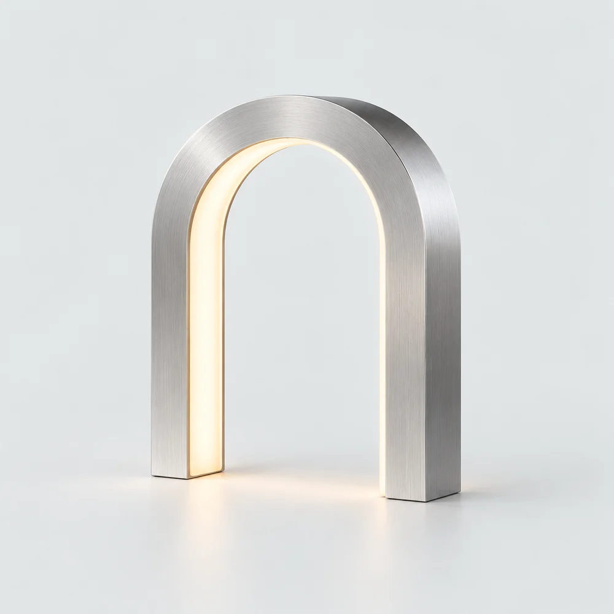
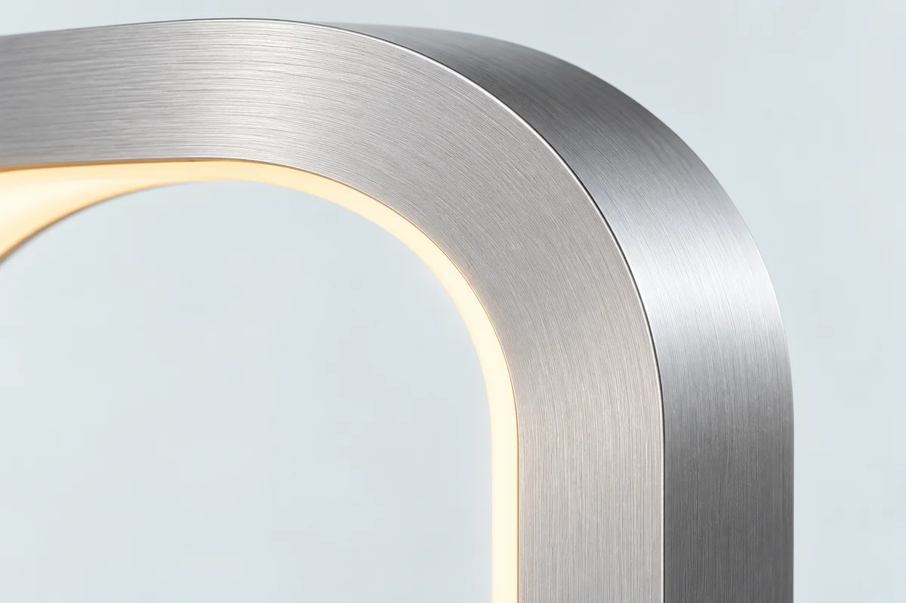

01 / An object for the everyday
A small
architecture
of light.
A single curve. A quiet presence.
Meet ARC 01, a table light shaped
around the space within.

02 / Object & space
Presence, without excess.

Part sculpture, part light. The open arch gives the eye somewhere to rest, while a line of warmth traces its inside edge.
Light mood is art direction. This fictional object has no tested photometric, electrical or manufacturing specification.
Gallery browsing does not change your chosen finish.
03 / Choose your finish
ARC 01
Table lightFrom $420 USD · Illustrative price
A continuous arch, expressed in two materials. Brushed aluminium catches the room; graphite draws a more defined line.
Your demo bag stays in this browser. No checkout, payments, real inventory or Shopify integration.
Dimensions & concept notes
- Height
- 380 mm
- Width
- 260 mm
- Depth
- 80 mm
- Light
- Recessed inner diffuser
Illustrative dimensions; not a measured or manufactured product. Generated surfaces and construction details may vary slightly between views.

04 / The inside line
Cool surface.
Warm centre.
The visual tension is simple: a precise metal exterior surrounding a soft line of light. A close view makes that relationship visible.
Materials shown are a design proposal. Finish appearance and light colour are conceptual.
05 / Scale study
A considered
footprint.
Imagine ARC 01 on a sideboard or generous shelf. The dimensional drawing makes the proposed footprint explicit.
Illustrative only. Placement, stability, heat, safety and light output have not been tested.